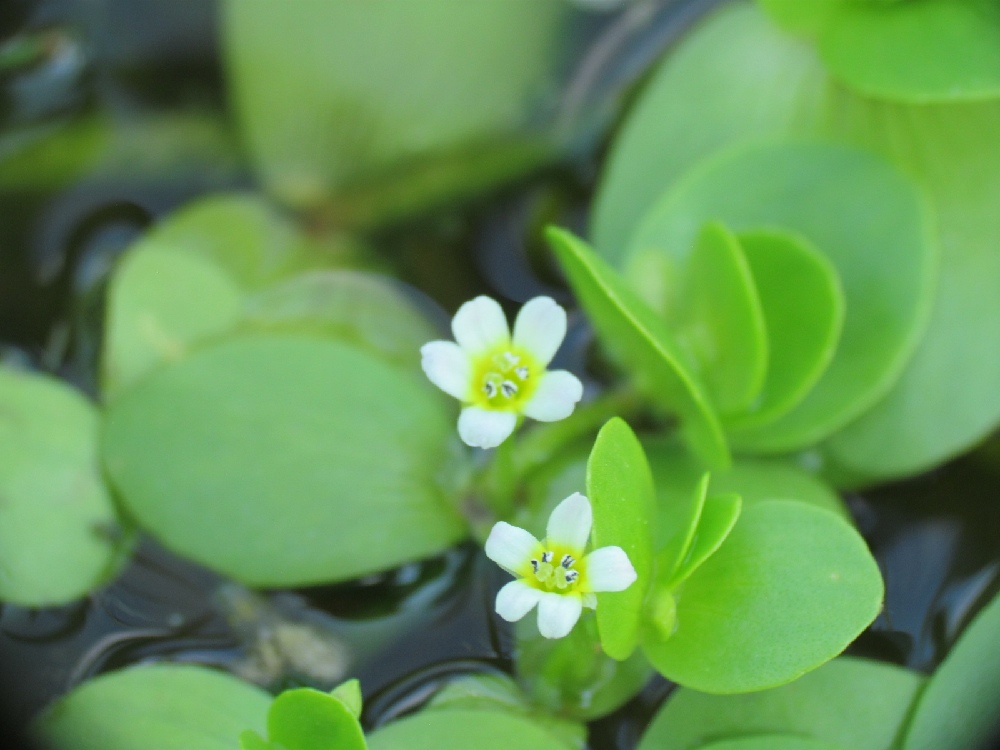
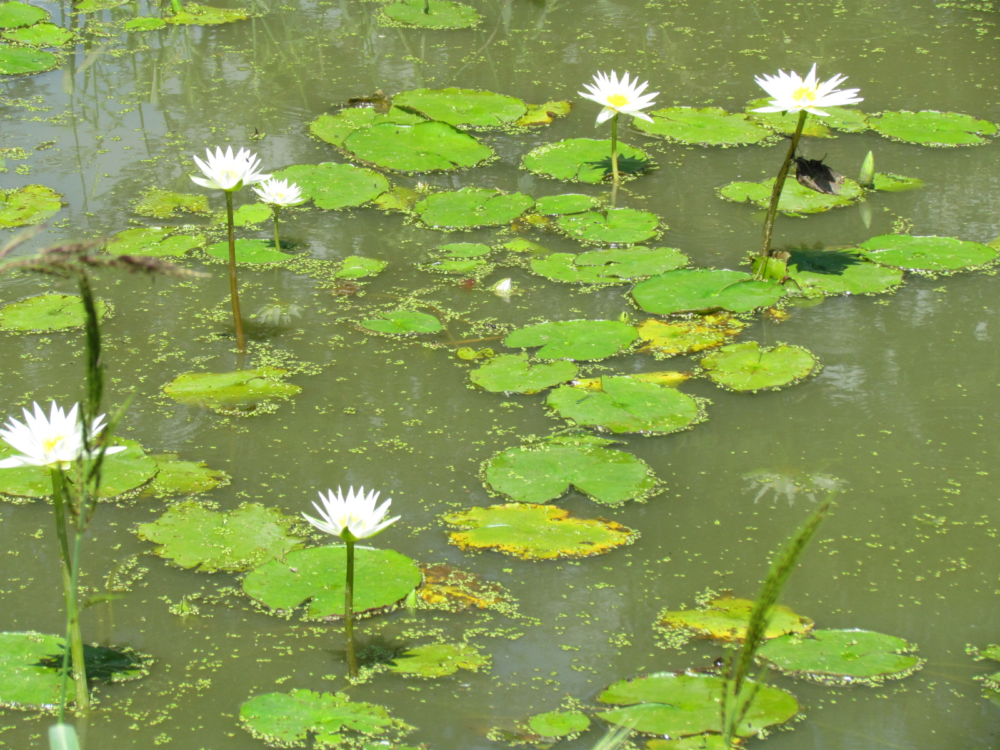
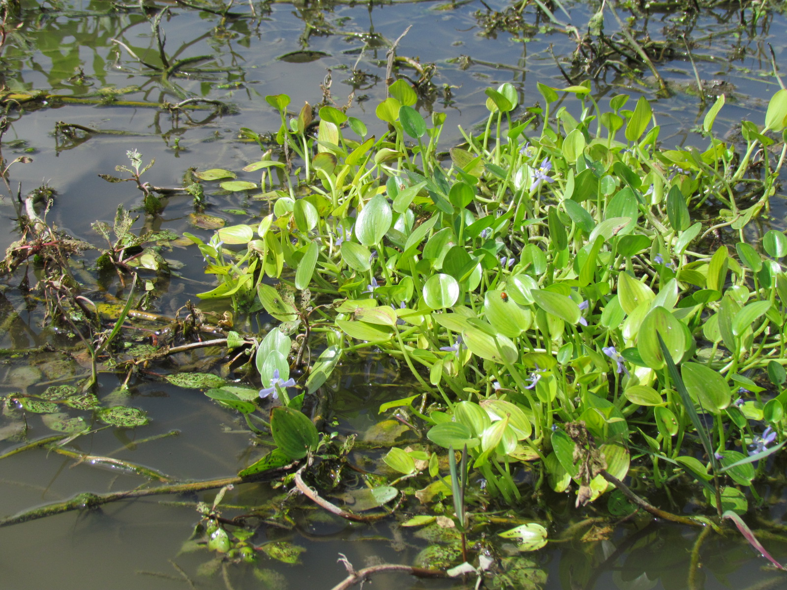
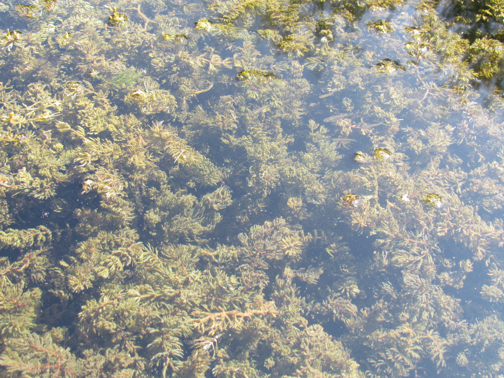

Los ecosistemas de humedales son indispensables para los organismos vivos. Todos necesitamos
agua y los
humedales contribuyen en gran medida a que el agua saludable sea asequible. Y ese es solo un ejemplo,
sus existencias benefician la vida de muchas maneras.
El estado de Durango está en el centro-noroeste (más o menos) de México, es uno de los
estados más
grandes del país por extensión (el cuarto) y cubre varios tipos de ecosistemas. Predomina el estado seco
en gran parte de su territorio, pero aun así, podemos encontrar humedales en todo el estado. Y esa es
otra cosa sorprendente acerca de los humedales, se pueden encontrar en casi todas partes y vienen en muchas
presentaciones.
Las plantas de los humedales
Las plantas de ambientes acuáticos se denominan hidrófitas, hidrófilas, o macrófitas (plantas
macroscópicas
de hábito acuático). En relación con el grado de dependencia que tienen con el agua, Lot et al. (1993, 2013)
las
clasifican
como sigue:
Acuáticas estrictas: las que realizan su ciclo de vida
completo en el agua, ya sea sumergidas parcial o completamente,
o flotando sobre la superficie.
Subacuáticas: las que llevan a cabo la mayor parte
de su ciclo de vida en hábitats acuáticos, preferentemente
en las partes someras y limítrofes, pero que
soportan temporalmente el suelo seco, periodo durante
el cual frecuentemente se reproducen.
Tolerantes: plantas de ambientes secos pero que son
capaces de soportar suelos temporalmente inundados
o estar parcialmente sumergidas en agua durante ciertos
periodos del año. Estas últimas no se incluyen
en el presente trabajo.




La vegetación de los humedales
La vegetación acuática y subacuática incluye
en Durango comunidades muy diversas, que se
desarrollan en donde haya depósitos o corrientes de
agua, en todos los climas, altitudes y substratos geológicos
(González-Elizondo et al. 2007).
Los humedales de Durango son continentales, tanto
naturales como artificiales. Entre los naturales, los hay
lacustres, ribereños y palustres (los palustres incluyen
pantanos, ciénagas, manantiales y escurrimientos). Dado
que muchas especies de plantas acuáticas y subacuáticas
crecen indistintamente en diversos tipos de humedales,
la descripción de las comunidades vegetales se
hace aquí con base en el tipo de plantas y en su distribución
por regiones. Aunque en la región de la Sierra
existen en mayor número, particularmente en ciénegas
de valles intermontanos y en escurrimientos, los humedales
de mayor superficie se localizan en la región
de los Valles.
Algunas de las principales formas en que se manifiesta
la vegetación de humedales (adaptado de González-Elizondo
et al. 2007) son las siguientes:
Comunidades herbáceas: acuáticas y subacuáticas emergentes,
flotantes y
sumergidas.
Vegetación riparia y leñosa.
Amenazas
Las plantas que habitan ambientes acuáticos son particularmente
sensibles a las alteraciones causadas por el
ser humano a su entorno (González-Elizondo et al.
2007). La desecación intencional de lagos, ciénegas y
manantiales, la manipulación de corrientes, el entubamiento
de cauces de ríos y arroyos, el uso de grandes
volúmenes
de agua, la contaminación y otras actividades
humanas están deteriorando los hábitats de las
plantas asociadas
a la presencia de agua, reduciéndolos
o eliminándolos
(Rzedowski 1978). Esto trae consigo la
desaparición de algunos organismos, en ocasiones el
incremento
de otros como ocurre con las plantas invasoras,
o en el peor de los casos la pérdida completa del
ecosistema.
Referencias bibliográficas
González-Elizondo, M.S., M. González-Elizondo y M.A. Márquez-Linares.
2007. Vegetación y ecorregiones de Durango. Plaza y Valdés
Editores/ipn. México.
Lot, A., A. Novelo y P. Ramírez García. 1993. Diversity of mexican
aquatic vascular plant flora. En: Biological diversity of Mexico. Origins
and distribution. T.P. Ramamoorthy, R. Bye, A. Lot y J. Fa (eds.).
Oxford University Press, pp. 577-591.
Lot, A., R. Medina Lemos y F. Chiang (eds.). 2013. Plantas acuáticas
mexicanas: una contribución a la flora de México. unam, México.
Rzedowski, J. 1978. Vegetación de México. Editorial Limusa. México.
sarh. Secretaría de Agricultura y Recursos Hidráulicos. 1992. Ley de
Aguas Nacionales. Publicada el 1 de diciembre de 1992 en el
Diario Oficial de la Federación. Última reforma publicada el 11 de
agosto de 2014.